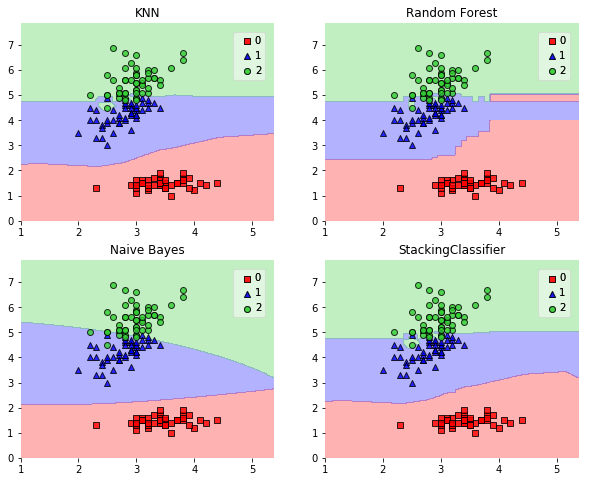

StackingClassifier
An ensemble-learning meta-classifier for stacking.
from mlxtend.classifier import StackingClassifier
Overview
Stacking is an ensemble learning technique to combine multiple classification models via a meta-classifier. The individual classification models are trained based on the complete training set; then, the meta-classifier is fitted based on the outputs -- meta-features -- of the individual classification models in the ensemble. The meta-classifier can either be trained on the predicted class labels or probabilities from the ensemble.

The algorithm can be summarized as follows (source: [1]):

References
- [1] Tang, J., S. Alelyani, and H. Liu. "Data Classification: Algorithms and Applications." Data Mining and Knowledge Discovery Series, CRC Press (2015): pp. 498-500.
- [2] Wolpert, David H. "Stacked generalization." Neural networks 5.2 (1992): 241-259.
Example 1 - Simple Stacked Classification
from sklearn import datasets
iris = datasets.load_iris()
X, y = iris.data[:, 1:3], iris.target
from sklearn import model_selection
from sklearn.linear_model import LogisticRegression
from sklearn.neighbors import KNeighborsClassifier
from sklearn.naive_bayes import GaussianNB
from sklearn.ensemble import RandomForestClassifier
from mlxtend.classifier import StackingClassifier
import numpy as np
clf1 = KNeighborsClassifier(n_neighbors=1)
clf2 = RandomForestClassifier(random_state=1)
clf3 = GaussianNB()
lr = LogisticRegression()
sclf = StackingClassifier(classifiers=[clf1, clf2, clf3],
meta_classifier=lr)
print('3-fold cross validation:\n')
for clf, label in zip([clf1, clf2, clf3, sclf],
['KNN',
'Random Forest',
'Naive Bayes',
'StackingClassifier']):
scores = model_selection.cross_val_score(clf, X, y,
cv=3, scoring='accuracy')
print("Accuracy: %0.2f (+/- %0.2f) [%s]"
% (scores.mean(), scores.std(), label))
3-fold cross validation:
Accuracy: 0.91 (+/- 0.01) [KNN]
Accuracy: 0.91 (+/- 0.06) [Random Forest]
Accuracy: 0.92 (+/- 0.03) [Naive Bayes]
Accuracy: 0.95 (+/- 0.03) [StackingClassifier]
import matplotlib.pyplot as plt
from mlxtend.plotting import plot_decision_regions
import matplotlib.gridspec as gridspec
import itertools
gs = gridspec.GridSpec(2, 2)
fig = plt.figure(figsize=(10,8))
for clf, lab, grd in zip([clf1, clf2, clf3, sclf],
['KNN',
'Random Forest',
'Naive Bayes',
'StackingClassifier'],
itertools.product([0, 1], repeat=2)):
clf.fit(X, y)
ax = plt.subplot(gs[grd[0], grd[1]])
fig = plot_decision_regions(X=X, y=y, clf=clf)
plt.title(lab)

Example 2 - Using Probabilities as Meta-Features
Alternatively, the class-probabilities of the first-level classifiers can be used to train the meta-classifier (2nd-level classifier) by setting use_probas=True. If average_probas=True, the probabilities of the level-1 classifiers are averaged, if average_probas=False, the probabilities are stacked (recommended). For example, in a 3-class setting with 2 level-1 classifiers, these classifiers may make the following "probability" predictions for 1 training sample:
- classifier 1: [0.2, 0.5, 0.3]
- classifier 2: [0.3, 0.4, 0.4]
If average_probas=True, the meta-features would be:
- [0.25, 0.45, 0.35]
In contrast, using average_probas=False results in k features where, k = [n_classes * n_classifiers], by stacking these level-1 probabilities:
- [0.2, 0.5, 0.3, 0.3, 0.4, 0.4]
clf1 = KNeighborsClassifier(n_neighbors=1)
clf2 = RandomForestClassifier(random_state=1)
clf3 = GaussianNB()
lr = LogisticRegression()
sclf = StackingClassifier(classifiers=[clf1, clf2, clf3],
use_probas=True,
average_probas=False,
meta_classifier=lr)
print('3-fold cross validation:\n')
for clf, label in zip([clf1, clf2, clf3, sclf],
['KNN',
'Random Forest',
'Naive Bayes',
'StackingClassifier']):
scores = model_selection.cross_val_score(clf, X, y,
cv=3, scoring='accuracy')
print("Accuracy: %0.2f (+/- %0.2f) [%s]"
% (scores.mean(), scores.std(), label))
3-fold cross validation:
Accuracy: 0.91 (+/- 0.01) [KNN]
Accuracy: 0.91 (+/- 0.06) [Random Forest]
Accuracy: 0.92 (+/- 0.03) [Naive Bayes]
Accuracy: 0.94 (+/- 0.03) [StackingClassifier]
Example 3 - Stacked Classification and GridSearch
To set up a parameter grid for scikit-learn's GridSearch, we simply provide the estimator's names in the parameter grid -- in the special case of the meta-regressor, we append the 'meta-' prefix.
from sklearn.linear_model import LogisticRegression
from sklearn.neighbors import KNeighborsClassifier
from sklearn.naive_bayes import GaussianNB
from sklearn.ensemble import RandomForestClassifier
from sklearn.model_selection import GridSearchCV
from mlxtend.classifier import StackingClassifier
# Initializing models
clf1 = KNeighborsClassifier(n_neighbors=1)
clf2 = RandomForestClassifier(random_state=1)
clf3 = GaussianNB()
lr = LogisticRegression()
sclf = StackingClassifier(classifiers=[clf1, clf2, clf3],
meta_classifier=lr)
params = {'kneighborsclassifier__n_neighbors': [1, 5],
'randomforestclassifier__n_estimators': [10, 50],
'meta-logisticregression__C': [0.1, 10.0]}
grid = GridSearchCV(estimator=sclf,
param_grid=params,
cv=5,
refit=True)
grid.fit(X, y)
cv_keys = ('mean_test_score', 'std_test_score', 'params')
for r, _ in enumerate(grid.cv_results_['mean_test_score']):
print("%0.3f +/- %0.2f %r"
% (grid.cv_results_[cv_keys[0]][r],
grid.cv_results_[cv_keys[1]][r] / 2.0,
grid.cv_results_[cv_keys[2]][r]))
print('Best parameters: %s' % grid.best_params_)
print('Accuracy: %.2f' % grid.best_score_)
0.667 +/- 0.00 {'kneighborsclassifier__n_neighbors': 1, 'meta-logisticregression__C': 0.1, 'randomforestclassifier__n_estimators': 10}
0.667 +/- 0.00 {'kneighborsclassifier__n_neighbors': 1, 'meta-logisticregression__C': 0.1, 'randomforestclassifier__n_estimators': 50}
0.927 +/- 0.02 {'kneighborsclassifier__n_neighbors': 1, 'meta-logisticregression__C': 10.0, 'randomforestclassifier__n_estimators': 10}
0.913 +/- 0.03 {'kneighborsclassifier__n_neighbors': 1, 'meta-logisticregression__C': 10.0, 'randomforestclassifier__n_estimators': 50}
0.667 +/- 0.00 {'kneighborsclassifier__n_neighbors': 5, 'meta-logisticregression__C': 0.1, 'randomforestclassifier__n_estimators': 10}
0.667 +/- 0.00 {'kneighborsclassifier__n_neighbors': 5, 'meta-logisticregression__C': 0.1, 'randomforestclassifier__n_estimators': 50}
0.933 +/- 0.02 {'kneighborsclassifier__n_neighbors': 5, 'meta-logisticregression__C': 10.0, 'randomforestclassifier__n_estimators': 10}
0.940 +/- 0.02 {'kneighborsclassifier__n_neighbors': 5, 'meta-logisticregression__C': 10.0, 'randomforestclassifier__n_estimators': 50}
Best parameters: {'kneighborsclassifier__n_neighbors': 5, 'meta-logisticregression__C': 10.0, 'randomforestclassifier__n_estimators': 50}
Accuracy: 0.94
In case we are planning to use a regression algorithm multiple times, all we need to do is to add an additional number suffix in the parameter grid as shown below:
from sklearn.model_selection import GridSearchCV
# Initializing models
clf1 = KNeighborsClassifier(n_neighbors=1)
clf2 = RandomForestClassifier(random_state=1)
clf3 = GaussianNB()
lr = LogisticRegression()
sclf = StackingClassifier(classifiers=[clf1, clf1, clf2, clf3],
meta_classifier=lr)
params = {'kneighborsclassifier-1__n_neighbors': [1, 5],
'kneighborsclassifier-2__n_neighbors': [1, 5],
'randomforestclassifier__n_estimators': [10, 50],
'meta-logisticregression__C': [0.1, 10.0]}
grid = GridSearchCV(estimator=sclf,
param_grid=params,
cv=5,
refit=True)
grid.fit(X, y)
cv_keys = ('mean_test_score', 'std_test_score', 'params')
for r, _ in enumerate(grid.cv_results_['mean_test_score']):
print("%0.3f +/- %0.2f %r"
% (grid.cv_results_[cv_keys[0]][r],
grid.cv_results_[cv_keys[1]][r] / 2.0,
grid.cv_results_[cv_keys[2]][r]))
print('Best parameters: %s' % grid.best_params_)
print('Accuracy: %.2f' % grid.best_score_)
0.667 +/- 0.00 {'kneighborsclassifier-2__n_neighbors': 1, 'randomforestclassifier__n_estimators': 10, 'kneighborsclassifier-1__n_neighbors': 1, 'meta-logisticregression__C': 0.1}
0.667 +/- 0.00 {'kneighborsclassifier-2__n_neighbors': 1, 'randomforestclassifier__n_estimators': 50, 'kneighborsclassifier-1__n_neighbors': 1, 'meta-logisticregression__C': 0.1}
0.907 +/- 0.03 {'kneighborsclassifier-2__n_neighbors': 1, 'randomforestclassifier__n_estimators': 10, 'kneighborsclassifier-1__n_neighbors': 1, 'meta-logisticregression__C': 10.0}
0.913 +/- 0.03 {'kneighborsclassifier-2__n_neighbors': 1, 'randomforestclassifier__n_estimators': 50, 'kneighborsclassifier-1__n_neighbors': 1, 'meta-logisticregression__C': 10.0}
0.667 +/- 0.00 {'kneighborsclassifier-2__n_neighbors': 5, 'randomforestclassifier__n_estimators': 10, 'kneighborsclassifier-1__n_neighbors': 1, 'meta-logisticregression__C': 0.1}
0.667 +/- 0.00 {'kneighborsclassifier-2__n_neighbors': 5, 'randomforestclassifier__n_estimators': 50, 'kneighborsclassifier-1__n_neighbors': 1, 'meta-logisticregression__C': 0.1}
0.927 +/- 0.02 {'kneighborsclassifier-2__n_neighbors': 5, 'randomforestclassifier__n_estimators': 10, 'kneighborsclassifier-1__n_neighbors': 1, 'meta-logisticregression__C': 10.0}
0.913 +/- 0.03 {'kneighborsclassifier-2__n_neighbors': 5, 'randomforestclassifier__n_estimators': 50, 'kneighborsclassifier-1__n_neighbors': 1, 'meta-logisticregression__C': 10.0}
0.667 +/- 0.00 {'kneighborsclassifier-2__n_neighbors': 1, 'randomforestclassifier__n_estimators': 10, 'kneighborsclassifier-1__n_neighbors': 5, 'meta-logisticregression__C': 0.1}
0.667 +/- 0.00 {'kneighborsclassifier-2__n_neighbors': 1, 'randomforestclassifier__n_estimators': 50, 'kneighborsclassifier-1__n_neighbors': 5, 'meta-logisticregression__C': 0.1}
0.927 +/- 0.02 {'kneighborsclassifier-2__n_neighbors': 1, 'randomforestclassifier__n_estimators': 10, 'kneighborsclassifier-1__n_neighbors': 5, 'meta-logisticregression__C': 10.0}
0.913 +/- 0.03 {'kneighborsclassifier-2__n_neighbors': 1, 'randomforestclassifier__n_estimators': 50, 'kneighborsclassifier-1__n_neighbors': 5, 'meta-logisticregression__C': 10.0}
0.667 +/- 0.00 {'kneighborsclassifier-2__n_neighbors': 5, 'randomforestclassifier__n_estimators': 10, 'kneighborsclassifier-1__n_neighbors': 5, 'meta-logisticregression__C': 0.1}
0.667 +/- 0.00 {'kneighborsclassifier-2__n_neighbors': 5, 'randomforestclassifier__n_estimators': 50, 'kneighborsclassifier-1__n_neighbors': 5, 'meta-logisticregression__C': 0.1}
0.933 +/- 0.02 {'kneighborsclassifier-2__n_neighbors': 5, 'randomforestclassifier__n_estimators': 10, 'kneighborsclassifier-1__n_neighbors': 5, 'meta-logisticregression__C': 10.0}
0.940 +/- 0.02 {'kneighborsclassifier-2__n_neighbors': 5, 'randomforestclassifier__n_estimators': 50, 'kneighborsclassifier-1__n_neighbors': 5, 'meta-logisticregression__C': 10.0}
Best parameters: {'kneighborsclassifier-2__n_neighbors': 5, 'randomforestclassifier__n_estimators': 50, 'kneighborsclassifier-1__n_neighbors': 5, 'meta-logisticregression__C': 10.0}
Accuracy: 0.94
API
StackingClassifier(classifiers, meta_classifier, use_probas=False, average_probas=False, verbose=0)
A Stacking classifier for scikit-learn estimators for classification.
Parameters
-
classifiers: array-like, shape = [n_classifiers]A list of classifiers. Invoking the
fitmethod on theStackingClassiferwill fit clones of these original classifiers that will be stored in the class attributeself.clfs_. -
meta_classifier: objectThe meta-classifier to be fitted on the ensemble of classifiers
-
use_probas: bool (default: False)If True, trains meta-classifier based on predicted probabilities instead of class labels.
-
average_probas: bool (default: False)Averages the probabilities as meta features if True.
-
verbose: int, optional (default=0)Controls the verbosity of the building process. -
verbose=0(default): Prints nothing -verbose=1: Prints the number & name of the regressor being fitted -verbose=2: Prints info about the parameters of the regressor being fitted -verbose>2: Changesverboseparam of the underlying regressor to self.verbose - 2
Attributes
-
clfs_: list, shape=[n_classifiers]Fitted classifiers (clones of the original classifiers)
-
meta_clf_: estimatorFitted meta-classifier (clone of the original meta-estimator)
Methods
fit(X, y)
Fit ensemble classifers and the meta-classifier.
Parameters
-
X: {array-like, sparse matrix}, shape = [n_samples, n_features]Training vectors, where n_samples is the number of samples and n_features is the number of features.
-
y: array-like, shape = [n_samples]Target values.
Returns
self: object
fit_transform(X, y=None, fit_params)
Fit to data, then transform it.
Fits transformer to X and y with optional parameters fit_params and returns a transformed version of X.
Parameters
-
X: numpy array of shape [n_samples, n_features]Training set.
-
y: numpy array of shape [n_samples]Target values.
Returns
-
X_new: numpy array of shape [n_samples, n_features_new]Transformed array.
get_params(deep=True)
Return estimator parameter names for GridSearch support.
predict(X)
Predict target values for X.
Parameters
-
X: {array-like, sparse matrix}, shape = [n_samples, n_features]Training vectors, where n_samples is the number of samples and n_features is the number of features.
Returns
-
labels: array-like, shape = [n_samples]Predicted class labels.
predict_proba(X)
Predict class probabilities for X.
Parameters
-
X: {array-like, sparse matrix}, shape = [n_samples, n_features]Training vectors, where n_samples is the number of samples and n_features is the number of features.
Returns
-
proba: array-like, shape = [n_samples, n_classes]Probability for each class per sample.
score(X, y, sample_weight=None)
Returns the mean accuracy on the given test data and labels.
In multi-label classification, this is the subset accuracy which is a harsh metric since you require for each sample that each label set be correctly predicted.
Parameters
-
X: array-like, shape = (n_samples, n_features)Test samples.
-
y: array-like, shape = (n_samples) or (n_samples, n_outputs)True labels for X.
-
sample_weight: array-like, shape = [n_samples], optionalSample weights.
Returns
-
score: floatMean accuracy of self.predict(X) wrt. y.
set_params(params)
Set the parameters of this estimator.
The method works on simple estimators as well as on nested objects
(such as pipelines). The latter have parameters of the form
<component>__<parameter> so that it's possible to update each
component of a nested object.
Returns
self